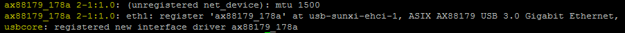
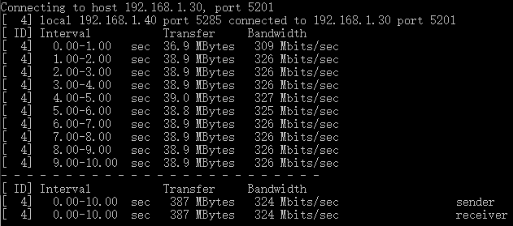
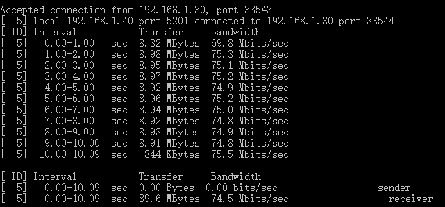
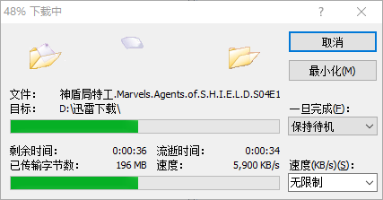
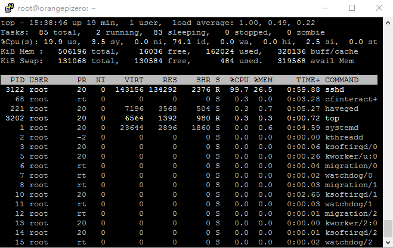

<!DOCTYPE html>
<html>
<head><meta name="generator" content="Hexo 3.9.0">
  <meta charset="utf-8">
  
<!-- Google Analytics -->
<script type="text/javascript">
(function(i,s,o,g,r,a,m){i['GoogleAnalyticsObject']=r;i[r]=i[r]||function(){
(i[r].q=i[r].q||[]).push(arguments)},i[r].l=1*new Date();a=s.createElement(o),
m=s.getElementsByTagName(o)[0];a.async=1;a.src=g;m.parentNode.insertBefore(a,m)
})(window,document,'script','//www.google-analytics.com/analytics.js','ga');

ga('create', 'UA-86850493-1', 'auto');
ga('send', 'pageview');

</script>
<!-- End Google Analytics -->


  
  <title>Orange-Pi-Zero-使用USB千兆网卡及速度测试 | Geek boood&#39;s blog</title>
  <meta name="viewport" content="width=device-width, initial-scale=1, maximum-scale=1">
  <meta name="description" content="Orange Pi Zero 是一个廉价的SBC，所以它只有一个百兆网口。于是我买来一个USB千兆网卡，并进行了速度测试。">
<meta property="og:type" content="article">
<meta property="og:title" content="Orange-Pi-Zero-使用USB千兆网卡及速度测试">
<meta property="og:url" content="https://geekboood.github.io/2017/02/03/Orange-Pi-Zero-使用USB千兆网卡及速度测试/index.html">
<meta property="og:site_name" content="Geek boood&#39;s blog">
<meta property="og:description" content="Orange Pi Zero 是一个廉价的SBC，所以它只有一个百兆网口。于是我买来一个USB千兆网卡，并进行了速度测试。">
<meta property="og:locale" content="default">
<meta property="og:image" content="https://geekboood.github.io/2017/02/03/Orange-Pi-Zero-使用USB千兆网卡及速度测试/1.jpg">
<meta property="og:image" content="https://geekboood.github.io/2017/02/03/Orange-Pi-Zero-使用USB千兆网卡及速度测试/2.jpg">
<meta property="og:image" content="https://geekboood.github.io/2017/02/03/Orange-Pi-Zero-使用USB千兆网卡及速度测试/1.png">
<meta property="og:image" content="https://geekboood.github.io/2017/02/03/Orange-Pi-Zero-使用USB千兆网卡及速度测试/2.png">
<meta property="og:image" content="https://geekboood.github.io/2017/02/03/Orange-Pi-Zero-使用USB千兆网卡及速度测试/3.png">
<meta property="og:image" content="https://geekboood.github.io/2017/02/03/Orange-Pi-Zero-使用USB千兆网卡及速度测试/4.png">
<meta property="og:image" content="https://geekboood.github.io/2017/02/03/Orange-Pi-Zero-使用USB千兆网卡及速度测试/5.png">
<meta property="og:image" content="https://geekboood.github.io/2017/02/03/Orange-Pi-Zero-使用USB千兆网卡及速度测试/6.png">
<meta property="og:image" content="https://geekboood.github.io/2017/02/03/Orange-Pi-Zero-使用USB千兆网卡及速度测试/7.png">
<meta property="og:updated_time" content="2019-07-31T04:06:19.587Z">
<meta name="twitter:card" content="summary">
<meta name="twitter:title" content="Orange-Pi-Zero-使用USB千兆网卡及速度测试">
<meta name="twitter:description" content="Orange Pi Zero 是一个廉价的SBC，所以它只有一个百兆网口。于是我买来一个USB千兆网卡，并进行了速度测试。">
<meta name="twitter:image" content="https://geekboood.github.io/2017/02/03/Orange-Pi-Zero-使用USB千兆网卡及速度测试/1.jpg">
  
    <link rel="alternate" href="/atom.xml" title="Geek boood&#39;s blog" type="application/atom+xml">
  
  
    <link rel="icon" href="/favicon.png">
  
  
    <link href="//fonts.googleapis.com/css?family=Source+Code+Pro" rel="stylesheet" type="text/css">
  
  <link rel="stylesheet" href="/css/style.css">
</head>
</html>
<body>
  <div id="container">
    <div id="wrap">
      <header id="header">
  <div id="banner"></div>
  <div id="header-outer" class="outer">
    <div id="header-title" class="inner">
      <h1 id="logo-wrap">
        <a href="/" id="logo">Geek boood&#39;s blog</a>
      </h1>
      
    </div>
    <div id="header-inner" class="inner">
      <nav id="main-nav">
        <a id="main-nav-toggle" class="nav-icon"></a>
        
          <a class="main-nav-link" href="/">Home</a>
        
          <a class="main-nav-link" href="/archives">Archives</a>
        
      </nav>
      <nav id="sub-nav">
        
          <a id="nav-rss-link" class="nav-icon" href="/atom.xml" title="RSS Feed"></a>
        
        <a id="nav-search-btn" class="nav-icon" title="Search"></a>
      </nav>
      <div id="search-form-wrap">
        <form action="//google.com/search" method="get" accept-charset="UTF-8" class="search-form"><input type="search" name="q" class="search-form-input" placeholder="Search"><button type="submit" class="search-form-submit">&#xF002;</button><input type="hidden" name="sitesearch" value="https://geekboood.github.io"></form>
      </div>
    </div>
  </div>
</header>
      <div class="outer">
        <section id="main"><article id="post-Orange-Pi-Zero-使用USB千兆网卡及速度测试" class="article article-type-post" itemscope itemprop="blogPost">
  <div class="article-meta">
    <a href="/2017/02/03/Orange-Pi-Zero-使用USB千兆网卡及速度测试/" class="article-date">
  <time datetime="2017-02-02T16:00:00.000Z" itemprop="datePublished">2017-02-03</time>
</a>
    
  </div>
  <div class="article-inner">
    
    
      <header class="article-header">
        
  
    <h1 class="article-title" itemprop="name">
      Orange-Pi-Zero-使用USB千兆网卡及速度测试
    </h1>
  

      </header>
    
    <div class="article-entry" itemprop="articleBody">
      
        <p>Orange Pi Zero 是一个廉价的SBC，所以它只有一个百兆网口。于是我买来一个USB千兆网卡，并进行了速度测试。</p>
<a id="more"></a>
<h2 id="简介"><a href="#简介" class="headerlink" title="简介"></a>简介</h2><p>我所使用的是绿联的千兆USB3.0网卡。这款网卡使用了ASIX的AX88179方案，在台式机上面稍微测试了一下表现还不错。本文主要介绍该网卡在Linux下驱动的安装及速度的测试。<br><br></p>
<h2 id="安装驱动"><a href="#安装驱动" class="headerlink" title="安装驱动"></a>安装驱动</h2><p>以root账户登入OPI Zero后，输入如下命令</p>
<figure class="highlight plain"><table><tr><td class="gutter"><pre><span class="line">1</span><br><span class="line">2</span><br><span class="line">3</span><br><span class="line">4</span><br><span class="line">5</span><br><span class="line">6</span><br></pre></td><td class="code"><pre><span class="line">wget http://www.asix.com.tw/FrootAttach/driver/AX88179_178A_LINUX_DRIVER_v1.16.0_SOURCE.tar.bz2</span><br><span class="line">tar -xf AX88179_178A_LINUX_DRIVER_v1.16.0_SOURCE.tar.bz2</span><br><span class="line">cd AX88179_178A_LINUX_DRIVER_v1.16.0_SOURCE</span><br><span class="line">make</span><br><span class="line">make install</span><br><span class="line">modprobe ax88179_178a</span><br></pre></td></tr></table></figure>

<p>这时输入dmesg命令，就可以看到如下信息<br><br>可以看到已经正确识别出了设备，这时输入ifconfig已经出现以enx开头你网卡的mac地址结尾的设备了，至此驱动的安装就完成了。</p>
<h2 id="速度测试"><a href="#速度测试" class="headerlink" title="速度测试"></a>速度测试</h2><p>以OPI Zero为服务器，win10的台式机为客户端，可以跑到324mbits/s。<br><br>以OPI Zero为客户端，win10的台式机为服务器，可以跑到约75mbits/s，这个就比较惨了。<br><br>测试使用winscp向OPI Zero上传文件<br><br><br>测试使用winscp从OPI Zero下载文件<br><br>这时可以看到在OPI Zero上，sshd进程占满了CPU，可能是因为透过ssh传文件会频繁加解密的缘故，也许使用samba或者ftp会好一点。<br></p>

      
    </div>
    <footer class="article-footer">
      <a data-url="https://geekboood.github.io/2017/02/03/Orange-Pi-Zero-使用USB千兆网卡及速度测试/" data-id="cjyqra6b600006xsfo6vh3tj6" class="article-share-link">Share</a>
      
      
    </footer>
  </div>
  
    
<nav id="article-nav">
  
    <a href="/2017/02/13/在Python中使用pytesseract进行简单的OCR/" id="article-nav-newer" class="article-nav-link-wrap">
      <strong class="article-nav-caption">Newer</strong>
      <div class="article-nav-title">
        
          在python中使用pytesseract进行简单的OCR
        
      </div>
    </a>
  
  
    <a href="/2017/02/03/在Python中使用PycURL替代requests来提高网页抓取效率/" id="article-nav-older" class="article-nav-link-wrap">
      <strong class="article-nav-caption">Older</strong>
      <div class="article-nav-title">在python中使用pycurl替代requests来提高网页抓取效率</div>
    </a>
  
</nav>

  
</article>

</section>
        
          <aside id="sidebar">
  
    

  
    

  
    
  
    
  <div class="widget-wrap">
    <h3 class="widget-title">Archives</h3>
    <div class="widget">
      <ul class="archive-list"><li class="archive-list-item"><a class="archive-list-link" href="/archives/2019/07/">July 2019</a></li><li class="archive-list-item"><a class="archive-list-link" href="/archives/2017/09/">September 2017</a></li><li class="archive-list-item"><a class="archive-list-link" href="/archives/2017/03/">March 2017</a></li><li class="archive-list-item"><a class="archive-list-link" href="/archives/2017/02/">February 2017</a></li><li class="archive-list-item"><a class="archive-list-link" href="/archives/2017/01/">January 2017</a></li><li class="archive-list-item"><a class="archive-list-link" href="/archives/2015/07/">July 2015</a></li></ul>
    </div>
  </div>


  
    
  <div class="widget-wrap">
    <h3 class="widget-title">Recent Posts</h3>
    <div class="widget">
      <ul>
        
          <li>
            <a href="/2019/07/30/BERT相关的一些实践/">BERT相关的一些实践</a>
          </li>
        
          <li>
            <a href="/2019/07/30/用Kubernetes建立实验集群/">用Kubernetes建立实验集群</a>
          </li>
        
          <li>
            <a href="/2019/07/30/移动端深度学习的现状与分析/">移动端深度学习的现状与分析</a>
          </li>
        
          <li>
            <a href="/2017/09/04/微博与Elastic的亿级数据实践/">微博与elastic的亿级数据实践</a>
          </li>
        
          <li>
            <a href="/2017/03/25/使用微博语料训练词向量/">使用微博语料训练词向量</a>
          </li>
        
      </ul>
    </div>
  </div>

  
</aside>
        
      </div>
      <footer id="footer">
  
  <div class="outer">
    <div id="footer-info" class="inner">
      &copy; 2019 Geek boood<br>
      Powered by <a href="http://hexo.io/" target="_blank">Hexo</a>
    </div>
  </div>
</footer>
    </div>
    <nav id="mobile-nav">
  
    <a href="/" class="mobile-nav-link">Home</a>
  
    <a href="/archives" class="mobile-nav-link">Archives</a>
  
</nav>
    

<script src="//ajax.googleapis.com/ajax/libs/jquery/2.0.3/jquery.min.js"></script>


  <link rel="stylesheet" href="/fancybox/jquery.fancybox.css">
  <script src="/fancybox/jquery.fancybox.pack.js"></script>


<script src="/js/script.js"></script>


  </div>
</body>
</html>